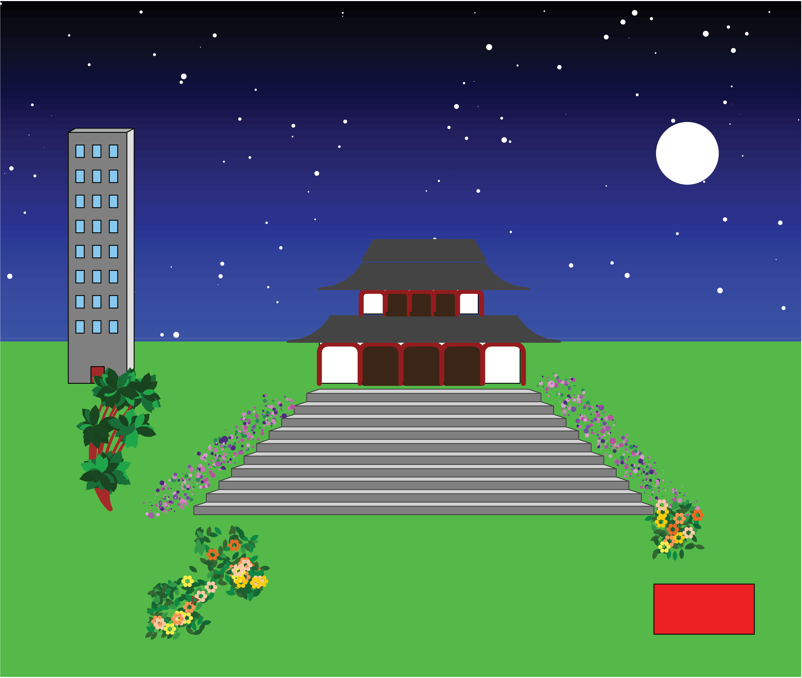
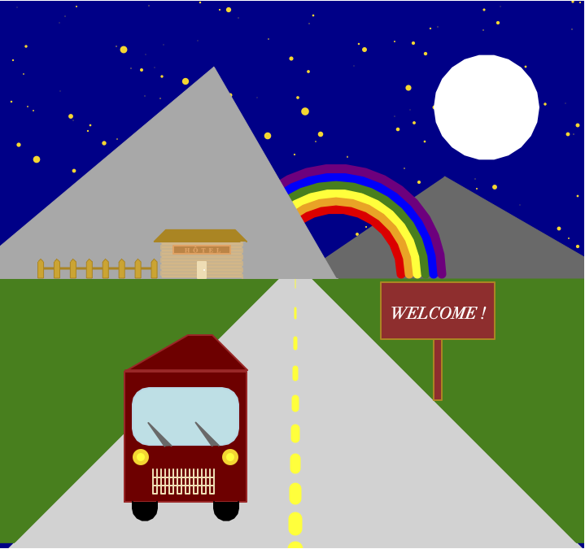

20. Projet¶
Dans ce chapitre, nous allons faire un projet de dessin. Nous allons mettre en pratique un certain nombre de concepts de ce cours :
dessiner
définir
colorier
répéter
cercler
parcourir
calculer
typographier
itérer
paramétrer
randomiser
Consignes¶
Vous devez créer un dessin avec un programme Python.
En concret, vous devez :
créer un dessin concret (pas abstrait)
choisir un sujet libre : nature, ville, intérieur, jeux vidéo, science-fiction, etc.
utiliser le module turtle pour dessiner
écrire 500 à 1000 lignes de code
commencer le programme avec un commentaire (auteur, date, description)
utiliser des dots, lignes et le remplissage
varier l’épaisseur du trait
lever et baisser le stylo
utiliser des cercles et des arcs de cercle
utiliser des couleurs de ligne, point, remplissage et arrière-fond
décomposer en fonctions appropriées, avec une taille de 2-15 lignes
décrire chaque fonction avec un commentaire de 1-2 ligne
utiliser des variables pour nommer vos entités (largeur, hauteur, rayon, couleur)
utiliser des expressions mathématiques (largeur/n, 2*rayon, etc.)
avoir une hiérarchie de fonctions (des plus complexes qui appellent des plus simples)
définir d’abord toutes les fonctions pour dessiner
définir une dernière fonction main() qui utilise ces fonctions pour créer un dessin
appeler main() vers la fin du programme pour créer le dessin
suivre la typographie standard PEP8 (espacement, noms des variables)
vérifier votre code en ligne pep8online.com
parcourir avec for des séquences de couleurs, angles, distances, et tailles
répéter avec for en 1D (par exemple: hublots, traverses, fenêtres, roues, clôtures)
répéter avec for en 2D (par exemple: fenêtres, grilles, pixels, etc.)
utiliser des fonctions aléatoires (module random) pour introduire de la variété
utiliser la perspective : des objets plus près sont plus grands
utiliser
random.seed(n)pour rendre votre dessin reproductibleexporter en format image : EPS, PNG, JPG
déposer sur Moodle les 4 fichiers avec un nom de forme
prénom_projet1(par exemplealice_projet1.py,alice_projet1.eps, etc.)
Exemples¶
Ces exemples ont été créés par des élèves en 3M, en option complémentaire informatique, après 2 mois de cours sur la programmation en Python (environ 24 périodes au total).
Jeu vidéo¶

Maison de campagne¶

Cadre des Pyrénées¶

Japon¶

Swiss space¶

Maison meublée¶

Casque d’astronaute¶

Urbain et rural¶

Star Trek¶

Loup sous la lune¶

Fantaisie psychédélique¶

Bateaux de pêche¶

Refactoring¶
Le Refactoring (réusinage) de code est l’opération consistant à retravailler le code source d’un programme informatique, de façon à en améliorer la lisibilité et, la maintenance, ou à le rendre plus générique.
Le refactoring est une réécriture de code pour le rendre
plus lisible
plus standard
plus réutilisable
plus général
Téléchargez le code source project1.py
Style PEP 8¶
PEP est un acronyme anglais signifiant Python Enhancement Proposal que l’on pourrait traduire en français par « Proposition d’Amélioration de Python » (PAP donc 😄).
Le document PEP 8 présente les bonnes conventions pour écrire du code lisible.
Utilisez 4 espaces pour l’indentation
Limitez les lignes à 79 caractères au maximum
Séparez des fonctions par 2 lignes vides
Écrivez les importations sur des lignes séparées
Espaces
Ne mettez pas d’espace entre nom de fonction et parenthèse (faux:
f (x))Ne mettez pas d’espace à l’intérieur des parenthèses (faux:
f( x, y ))Ne mettez pas d’espace avant
,,;,:(faux:def f(x , y) :)Mettez un espace avant et après un opérateur (
+,-,*,/, etc.)Mettez un espace avant et après le symbole d’affectation
=
Allez sur le site pep8online.com et copiez-y votre code.
Corrigez les 77 erreurs de styles.
Mettez un espace après
#Mettez deux lignes vides entre fonctions
Mettre un espace après
,
Nom de fonction¶
En Python les variables sont écrites avec des minuscules. Si une variable consiste en plusieurs mots, utilisez un tiret bas (_) pour séparer les mots.
En Python, les noms commençant avec des majuscules sont réservés pour les classes. Par exemple
player = Player()
Donc, changez les noms suivants :
Exporter → exporter
Niveau → niveau
RepositionnementFin → repositionnement_fin
PlateformePiques → plateforme_piques
TriangleDrapeau → triangle_drapeau
BatonDrapeau → baton_drapeau
ReplacementPiques → replacement_piques
Player → player
Brique → brique
Mur → mur
ReplacementMur → replacement_mur
Plateforme → plateforme
Comme un nom de fonction peut être utilisé à différents endroits nous avons avantage d’utiliser la fonction rechercher et remplacer

Dans VS Code nous avons aussi une fonction Remplacer Symbol F2

Conseils¶
Ce programme est récursif - La fonction main() appelle begin() qui appelle nuages() qui appelle soleil() etc.
Pour avoir des fonctions réutilisables au maximum, vous devez écrire des fonctions indépendantes les unes des autres, avec beaucoup de paramètres.
Donc voici les conseils essentiels :
utilisez la fonction
goto()pour positionner la tortue (il ne faut pas inclure la position dans la fonction)créez des fonctions indépendants (il ne faut pas les enchaîner)
créez des fonctions avec plein de paramètres (taille, couleur, épaisseur, etc.)
utilisez des valeurs par défaut pour préconfigurer les paramètres de la fonction
Jeu vidéo¶
Cette image utilise beaucoup d’éléments réutilisables:
nuages
arbres
briques
murs
piques
drapeau
Soleil¶
La fonction soleil() n’a pas d’argument et utilise un cercle pour dessiner un disque. La position de départ est le bord inférieur du disque.
Une meilleure façon est de créer une fonction soleil(d, col, a, angle, n) avec :
un diamètre
dune longueur de rayons
aun angle entre les rayons
angleun nombre de rayons
nune couleur
colune position initiale au centre du cercle
Nuage¶
Dans ce projet, les nuages sont créés par 6 disques de taille aléatoire avec 2 niveaux de gris.
La fonction nuage() possède un argument taille, mais cet argument n’a pas d’effet. La variable taille est remplacée par une valeur aléatoire dans l’intervalle [2, 4]. Voici ci-dessous cette fonction corrigée, pour créer des nuages de taille variable.
Arbre¶
La fonction arbre_AP(angle) (AP = arrière-plan):
spécifie comme argument l’angle
ne spécifie pas l’épaisseur du tronc
ne permet pas de varier la taille
laisse le stylo en position basse
Une meilleure façon est de créer une fonction arbre(h) dont
la direction est toujours verticale
la taille (hauteur
h) est un argumentl’épaisseur du tronc et 0.2 fois la hauteur
le diamètre du feuillage est 1.0 fois la hauteur
qui laisse le stylo en position haute
retourne au point de départ
Montagne¶
La fonction montagne_AP():
n’a aucun argument
dessine en arrière (de droite à gauche)
nécessite deux fonctions supplémentaires (
colorieretreplacement)n’est pas réutilisable pour le premier plan (PP)
Une meilleure façon est de créer une fonction montagne(h, rayons, couleur) qui :
accepte la taille des arbres
haccepte une liste de rayons
rayonsaccepte une couleur
couleurmémorise le point de départ
pdescend vers -180
mémorise une liste des positions des arbres
dessine les arbres à ces positions
peut être réutilisée pour le premier plan
dessine de gauche à droite
Joueur¶
La fonction joueur() n’a aucun argument.
Une meilleure façon est de créer une fonction joueur(a, bras, jambes, col) qui :
accepte la taille des membres
aaccepte une liste d’angles pour les
brasaccepte une liste d’angles pour les
jambesaccepte une couleur
col
Mur¶
Nous utilisons la fonction rectangle pour dessiner un mur.
La fonction mur(h, w, a, b) dessine un mur avec h x w briques de taille a x b.
Piques¶
La fonction piques() dessine une série de 6 triangles de taille fixe.
Une meilleure façon est de créer deux fonctions. Une fonction triangle(a) qui :
peut être utilisé seul
avec un côté
a
et une fonction piques(n, a) qui répète le triangle n fois.
Drapeau¶
La fonction drapeau() dessine un seul type de drapeau.
Une meilleure façon est de créer une fonction drapeau(h, a, col, text) qui dessine un drapeau avec :
une hauteur
hun triangle de côté
ade couleur
colqui affiche
text
Plateforme¶
La fonction plateforme_piques() dessine deux plateformes fixes.
Une meilleure façon est de créer une fonction plateforme(col, a, w) qui dessine une plateforme :
de couleur
colde longueur
aetd’une épaisseur
w
Téléchargez le code source du projet réusiné project1b.py
Champignon¶
Ce projet utilise principalement la fonction circle(r, angle) qui permet de dessiner un arc de cercle de rayon r et d’une longueur défini par angle.
Par défaut, un cercle entier est dessiné avec 36 segments.
Si une meilleure précision est nécessaire, on peut augmenter le nombre de segments, en spécifiant le paramètre optionnel step de la façon suivante:
circle(r, angle, steps=200).
Ci-dessous nous donnons quelques explications comment créer les éléments de ce type d’image.
Sol et Base¶
Beaucoup d’éléments sont créés par des ovales. Par exemple le sol, la serrure et les ronds sur le chapeau.
Porte¶
La porte est composée de 4 segments courbés. Nous tournons à gauche (rayon r positif). La fonction porte possède un paramètre r pour la taille.
Ceci nous permet de dessiner un ombre de la porte plus grand (à 110%) et plus foncé, pour donner un effet 3D.
Pour bien fermer la forme, nous mémorisons la position de départ dans la variable locale p.
En fin du dessin nous fermons la courbe avec l’instruction goto(p).
Fenêtre¶
L’origine de la fenêtre est au centre. Elle peut être dessinée avec deux disques. La vitre est en noir et elle a une taille de 80% par rapport au diamètre extérieur. Le cadre est fait avec 4 lignes qui partent du centre.
Chapeau¶
Le chapeau est composé d’arcs de différents rayons.
Fentes¶
Pour dessiner les fentes du champignon, nous utilisons deux arcs de cercle.
L’arc commence en position p et pointe vers center. L’arc a une courbure donnée par rayon.
La longueur de l’arc est exprimée par une valeur décimale entre 0 et 1 (0.5 par défaut).
Au bout de l’arc nous tournons d’une valeur angle et nous revenons en arrière le même arc.
Arrière-fond¶
Pour dessiner les lignes psychédéliques de l’arrière-fond, nous réutilisons les fentes de tout à l’heure.
Les fentes commencent le long des 4 bordes avec des coordonnées (x, y) et pointent vers center.
Loup¶
Ce projet utilise des polygones.
Dessiner un polygone¶
Un polygone est défini comme un tuple de coordonnées (x, y) des points du polygone.
Nous devons d’abord aller vers le premier point du polygone poly[0], baisser le stylo, et ensuite parcourir le reste de la séquence poly[1:].
Dessiner le loup¶
La façon la plus efficace est de mettre les coordonnées de chaque polygone dans un tuple. Ici nous commençons le tuple du polygone avec la couleur et nous ajoutons ensuite les points. Le loup est constitué de 22 polygones.
Changement d’échelle¶
L’utilisation de polygones permet de réutiliser la forme. Nous pouvons facilement changer :
la position,
la taille,
l’orientation.
Points numérotés¶
Il est possible de numéroter les 22 polygones et les points. Les grands nombres désignent les polygones, les petits numéros désignent les sommets.